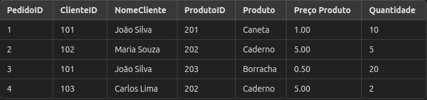
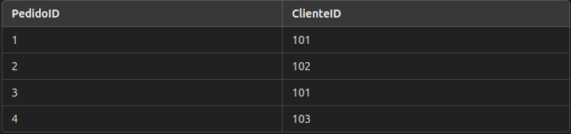
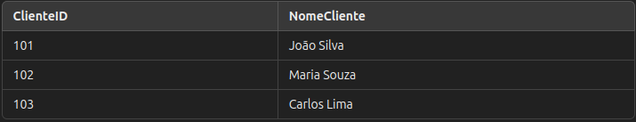
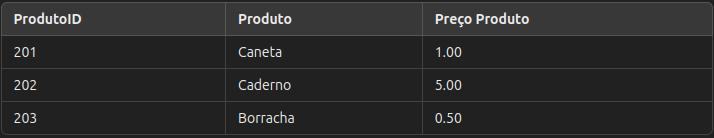
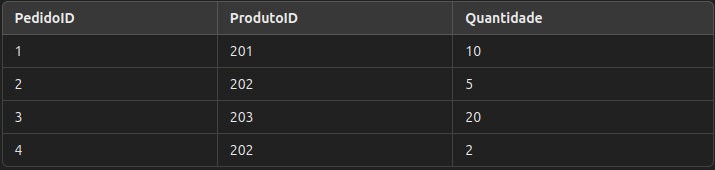

Normalização de Tabela: 2NF
A 2ª Forma Normal (2NF) é um passo importante no processo de normalização de dados em bancos de dados relacionais. Ela visa eliminar redundâncias e dependências parciais em uma tabela, o que melhora a integridade e a eficiência dos dados.
Definição e Regras da 2ª Forma Normal
Uma tabela está na 2ª Forma Normal (2NF) se:
- Ela já está na 1ª Forma Normal (1NF), ou seja, todos os dados estão atomizados (sem colunas com múltiplos valores) e cada registro é identificado por uma chave primária.
- Todos os atributos não chave (colunas que não fazem parte da chave primária) dependem totalmente da chave primária, ou seja, não existem dependências parciais.
- Se a tabela tiver uma chave primária composta, todos os atributos não chave devem depender de todos os elementos da chave composta. Caso contrário, a tabela não está na 2NF e precisa ser reorganizada.
Exemplo Prático: Tabela de Pedidos (não normalizada)
Imagine uma tabela de "Pedidos" que armazena informações sobre pedidos de clientes, produtos e quantidades, como mostrado abaixo. Nesta tabela, cada registro contém dados sobre um pedido específico e os detalhes do cliente e produto.

Problema de Dependência Parcial
Nesta tabela:
- NomeCliente depende de ClienteID, e Produto e Preço Produto dependem de ProdutoID. Esses atributos não dependem completamente da chave composta (PedidoID e ProdutoID), o que caracteriza uma dependência parcial.
Aplicando a 2NF
Para reorganizar a tabela e resolver as dependências parciais, dividimos a tabela em várias tabelas menores, cada uma armazenando informações distintas e essenciais. Isso resulta nas seguintes tabelas:
1. Tabela: Pedidos
Armazena os IDs dos pedidos e associa cada pedido ao cliente responsável, sem detalhes do cliente ou do produto.

2. Tabela: Clientes
Centraliza as informações dos clientes, eliminando duplicações de nomes.

3. Tabela: Produtos
Define os produtos e seus preços, evitando redundâncias ao centralizar esses dados.

4. Tabela: ItensPedido
Associa os pedidos aos produtos, indicando a quantidade específica de cada item em um pedido.

Explicação da Aplicação da 2NF
- Pedidos: Relaciona os IDs dos pedidos com os clientes, sem carregar informações duplicadas sobre os clientes.
- Clientes: Centraliza as informações sobre clientes, evitando repetições.
- Produtos: Armazena informações dos produtos e preços, facilitando atualizações e eliminando redundâncias.
- ItensPedido: Registra a relação entre pedidos e produtos, detalhando a quantidade de cada item em um pedido.
Benefícios da 2ª Forma Normal
- Elimina Redundâncias: Dados como NomeCliente e Preço Produto são armazenados uma única vez, reduzindo o risco de inconsistências.
- Facilidade de Atualização: Alterações nos dados são feitas em um único lugar, como atualizar o preço de um produto apenas na tabela Produtos.
- Economia de Espaço: Ao evitar dados duplicados, o armazenamento é mais eficiente.
- Melhor Integração de Dados: Organizar as informações em tabelas específicas facilita a integração e consulta entre os dados.
Perguntas sobre NF2